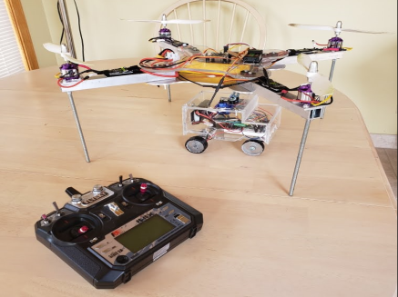

Mechanical Engineer
I was born in Nyack, NY. At the age of 7, I flew to Ecuador with my family and finished my education up to high school. Shortly after graduating I decided to pursue my college education back in the US. I started at Monroe Community College in Rochester, NY. Upon graduation, I transferred to Cornell University to continue my engineering studies. I am currently finishing my Master's of Engineering in Mechanical Engineering. My motivation to pursue engineering dates to my senior year in high school. I was part of the IB program, and as a member I got the opportunity to travel around cities and towns helping underserved communities and assisting them with their basic needs. It was quite shocking that living conditions in these communities were not the best, and education was rarely heard of. Ever since I graduated from high school and traveled to the US, I have aimed to gain experience in the engineering field to one day come back and provide strategic plans to improve living conditions through housing and educational technology.
Skills
Experience
Education
Set up and analyzed wind turbulence in the wake of a cylinder utilizing hotwires by visualizing voltage behavior with varying fan frequencies to obtain vortex shedding frequencies. In addition, I conducted drone testing to observe its behavior while undergoing turbulence in the wind tunnel.
Below is an image of the wind tunnel
Below is a video of a drone called "Pidgeon" hovering in the wind tunnel with a fan frequency equivalent to 15 Hz.
Design custom-ordered tool parts in SolidWorks, proceed to program macros in CNC machines and manufacture quantity of parts needed for completion of the order on time for delivery.
Below is an image of myself unloading cutter blades
Designed a GUI using Java programming language to enable workers to test Rth and Ampacity values in MOSFETs without the need of conducting these tests in laboratories. In addition, I also assisted the team by performing CAD redesigns on MOSFETs to later undergo thermo analysis utilizing ANSYS to inspect heat dissipation.
MOSFETs are a type of transistor and its applications include almost all electronic applicances. It is extensively used in radio frequency and EV applications.
Shortly after concluding my engineering prototyping class, I wanted to find a way to put the skills learned in practice. At that time, I had a good understanding of SolidWorks and its applications.
I applied for a job on campus at the Student Technology Center Lab in MCC. I found this to be a great experience to enhance my CAD skills and also to help students out!
I have always enjoyed motivating and being able to help the future generation of professionals. I was able to work at a charter school in the city of Rochester, NY. Here, I would assist students in any assignment they would have. Primarily science and math related assignments.
I was also able to attend school programs and spend time with teachers and students. It was great being part of such a great community and knowing I was able to help out!
Manufacture, design and wire an unmanned aerial vehicle (UAV) capable of carrying an unmanned ground vehicle (UGV) across an obstacle course, which then would be dropped after light sensors activate for the UGV to follow a straight path to the finish line.
Below is an image of the UAV and UGV system prior to flight
Schematic wiring of circuit boards, motors, battery, and color sensor for UGV

Schematic wiring of ESC's, flight controller, receivers, batteries, PDB, and motors for UAV
Manufacture and design mechanical car body parts for an autonomous vehicle in SolidWorks capable of circling around an oval track and pulling the most weight attached to its rear end.
Below is an image of myself unloading cutter blades
Displayed a geographical data map of Chimborazo (province located in Ecuador) in MATLAB that would display colored dots (green, yellow, and red) depending on the severity of Covid-19 cases in each town. Also, plot information to understand and analyze Covid-19 cases across time.
Following the rise of Covid-19 cases around the world I saw an opportunity to create a user-friendly program in MATLAB to help habitants in my hometown have a better understanding and image of what towns within the province need to be avoided due to severity of Covid-19 cases.
I was recognized and interviewed by a local news channel in Rochester, NY. Follow this link to read the news section!
Utilized a Raspberry Pi Pico with several servo motors to control an Animatronic Hand. Specifically, we used these motors actuated by flex sensors to control the fingers of an Animatronic Hand. These flex sensors were attached to fingers on a glove enabling any user to wear this glove and actuate the animatronic hand by fexing their fingers. Below an image showing this.
To view our presentation posted on YouTube please click on this following link
To view the final report for this project please click on this following link
Our main goal was to first read from the ADC pins of the Pi Pico to get the current voltage across the flex sensors. Then, we used linear mapping form voltage to PWM, to then send this PWM signal to the servo motor. Since these PWM signals control the rotational position of the servos, we can adjust the servo position using the flex sensors. A logical structure for the software implementation is shown below.
We used cardboard, straws, and strings to build the animatronic hand. We traced our hands on the cardboard, then cut out the pattern with scissors. We hinged the finger joints with the help of a knife to give a natural curl to the fingers. We attached one edge of the string to the tip of the finger and the other to the servo motors. This setup will enable the fingers to curl when the servo motor is activated. The straws helped us create a channel that would later be used to feed the strings through. A better picture of the setup is illustrated below.
As a design project we were assigned to choose a Reuleaux Machine from an online gallery. We would then observe this machine and all its components. Using our understanding of basic mechanics, we had to figure out how such machine worked and all components interacted. Finally, we would use Fusion 360 to design an accurate representation of chosen Reuleaux Machine. I chose the "Pappenheim Chamber Wheel Mechanism" which was manufactured by Gustave Voigt Werkstatt and designed by Reuleaux Franz.
This machine is the oldest form of chamber-wheel-gear, and the forerunner of modern gear pumps. The fluid that travels through the mechanism is delivered in a continuous stream. The volume of the flow per revolution is about equal to the annular space between the point and root cylinders. The mechanism can serve as both a pump and a motor. When water flows through the top entrance of the machine, the interlocked wheels can serve as a motor. On the other hand, when making use of the handle, it could allow the device to deliver fluids with constant volumetric flow. Below an image.
Below is a Render of the completed CAD version of the Pappenheim Chamber Wheel Mechanism observed above.
I have always found fascinating the capability of capturing moments in life through pictures. I recently acquired a semi-professional camera (Sony alpha a6000) which I have been using ever since. Below are some samples of the pictures I have taken: To see more of my journey as a photographer, please visit koalistic.photography on Instagram!
Visiting a ~750 year old collapsed volcano 🌋 now known as the Quilotoa Lake!
Sunset view from the shores of Jambeli Island, located off the southern coast of Ecuador.
View of the Frederick Douglass-Susan B. Anthony Memorial Bridge over the Genesee River in downtown Rochester.
At the age of 16 I was on a quest of finding a sport that I would be truly passionate about. After bouncing from sport to sport, including soccer, basketball, volleyball, track and field, etc., I found myself enrolling in a jiu jitsu gym and have continued practicing ever since!
Sports in general were always a main aspect of my life. My father was a huge soccer fan, which is the sport I started with. I trained all my childhood and some of my teenage years before I bounced to different sports.
Below is an image of an award ceremony after a kids tournament back in 2004 (I was 4 years old at the time)
I played in several teams during my life. The most recent team I played for was Cornell "Santos", an undergraduate club team at Cornell. I played Fall 2022 season, unfortunately we did not qualify to regionals, but it was a great experience and very fun!
Copyright © Henry Tenecela. Made with Easy Tutorials